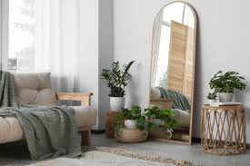

Use Mirrors Strategically to Enhance Space and Light
Mirrors are a designer’s secret weapon for making spaces feel larger and brighter. Placing a mirror opposite a window can reflect natural light throughout the room, creating the illusion of a bigger, more open space. In smaller rooms or hallways, mirrors can be used to visually expand the area. Consider using large mirrors or a collection of smaller ones to add a decorative element while also enhancing light and depth. The frames of the mirrors can also complement your decor style, adding another layer of design.
- Expand Visual Space

- Reflective Illusion: Mirrors create an illusion of depth and openness. Placing a large mirror on a wall can make a room feel larger and more expansive.
- Placement Tips: Position mirrors opposite windows to reflect natural light and views, which can help visually enlarge the space.
- Enhance Natural Light

- Light Reflection: Mirrors reflect light, helping to brighten up darker areas of a room. By placing mirrors where they can catch natural light from windows or light fixtures, you can enhance the overall brightness of the space.
- Strategic Locations: Install mirrors near light sources or across from them to maximize light distribution. Avoid placing mirrors in areas where they will reflect harsh artificial lighting directly into the eyes.
- Improve Room Balance and Flow

- Visual Symmetry: Mirrors can help balance the visual weight in a room. For example, if one side of a room feels heavy with furniture, a mirror on the opposite wall can help even out the visual balance.
- Focal Points:Use mirrors to create focal points or highlight architectural features. A well-placed mirror can draw attention to a particular area or object, adding interest to the room.
- Add Elegance and Style

- Decorative Elements: Mirrors come in various styles, frames, and sizes. Choosing a decorative mirror can add a touch of elegance or personality to your space. Mirrors with ornate frames can act as statement pieces, while simple designs can contribute to a modern aesthetic.
- Artistic Use: Mirrors can also be used creatively as artwork. Arranging multiple mirrors in a gallery wall style can create a unique visual effect.
- Create Functional Reflections

- Entryways and Hallways: Mirrors in entryways or hallways are practical for checking appearances before heading out. They also make these transitional spaces feel more inviting.
- Small Spaces:In small rooms or apartments, mirrors can help reflect and enhance the limited space available, making it feel more open and airy.
- Consider Mirror Placement and Size

- Full-Length Mirrors: Ideal for bedrooms and dressing areas to provide a full view. They can also visually elongate a room if placed strategically.
- Accent Mirrors: Smaller mirrors can be used as accents to complement other decor elements. They are perfect for adding personality and style without overwhelming the space.
- Avoid Common Mistakes
- Avoid Overuse: Too many mirrors can make a space feel cluttered and chaotic. Use mirrors thoughtfully to avoid overwhelming the room.
- Reflections of Clutter: Be mindful of what mirrors are reflecting. Avoid positioning mirrors where they reflect clutter or unappealing views, as this can detract from the intended effect.